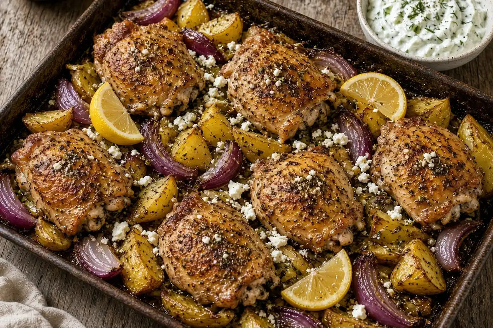

Sheet-Pan Greek Chicken Thighs with Potatoes and Tzatziki
Bone-in, skin-on chicken thighs salted ahead and rubbed with grated garlic, lemon zest and a big dose of oregano, roasted over potatoes and red onion on two sheet pans, then finished with fresh lemon, flaky salt, herbs, chile flakes and feta, with a punchy garlic-lemon tzatziki. A double batch, so Wednesday is leftovers.

By
Yield: 8 servings
Prep:
Cook:
Total:
Difficulty: Easy
Ingredients
- 5 lb bone-in skin-on chicken thighs (about 12)
- 5 tsp kosher salt, for the chicken (1 tsp per lb)
- 3 lb Yukon Gold potatoes, cut into 1-inch wedges
- 2 red onions, cut into wedges
- 1 1/2 tsp kosher salt, for the potatoes
- 1/2 cup extra-virgin olive oil
- 8 cloves garlic, grated, for the rub
- 2 lemons, zested and juiced, for the rub
- 4 Tbsp dried oregano
- 1 tsp black pepper
- 8 oz feta cheese, crumbled
- 1 lemon, for finishing
- 1 tsp flaky sea salt
- 1/4 tsp red pepper flakes
- 1/4 cup fresh dill or parsley, chopped
- 1 English cucumber, grated
- 1/2 tsp kosher salt, for the cucumber
- 2 cups whole-milk Greek yogurt
- 2 cloves garlic, grated, for the tzatziki
- 1 lemon, zested and juiced, for the tzatziki
- 2 Tbsp fresh dill, chopped
- 1 Tbsp red wine vinegar
Instructions
- Pat the chicken thighs very dry and season them on all sides with the 5 tsp kosher salt. Let them rest on a sheet pan at room temperature while you do the next steps, at least 15 to 20 minutes (2 minutes active).
- Heat the oven to 425°F with racks in the upper and lower thirds, about 15 minutes.
- Toss the grated cucumber with the 1/2 tsp kosher salt in a strainer set over a bowl and let it drain, 10 minutes.
- Mix the olive oil, the grated garlic for the rub, the zest of the 2 rub lemons, the oregano, and the black pepper into a paste, 5 minutes.
- Toss the potatoes and red onions with the 1 1/2 tsp kosher salt, the juice of the 2 rub lemons, and one-third of the oregano paste, and spread them over two sheet pans, 5 minutes.
- Rub the rest of the oregano paste over the salted chicken thighs, working some under the skin, and nestle them skin side up among the potatoes, 3 minutes.
- Roast 45 minutes, swapping the pans at about 22 minutes, until the skin is crisp and the chicken reads 185°F.
- While it roasts, make the tzatziki: squeeze the salted cucumber hard in a towel until dry, then stir it with the Greek yogurt, the garlic for the tzatziki, the zest and juice of the tzatziki lemon, the dill, and the red wine vinegar. Taste for salt and chill, 10 minutes.
- As soon as the pans come out, zest the finishing lemon over everything, then squeeze its juice over the chicken and potatoes. Sprinkle with the flaky sea salt, red pepper flakes, dill or parsley, and feta, 3 minutes.
- Serve right away with the tzatziki, 2 minutes.
Notes: This is a double batch: eat half tonight and refrigerate the rest for Wednesday's leftovers. Make-ahead tip: for even more flavor, salt the chicken thighs in the morning and leave them uncovered on a rack in the fridge (dry-brine) until dinner; skip the room-temperature rest and go straight to the rub. To reheat, spread the chicken and potatoes on a sheet pan and heat at 400°F for 15 to 20 minutes so the skin crisps back up, then brighten with a squeeze of lemon; keep the tzatziki cold. Thighs stay juicier than breasts at this heat, and the rendered fat roasts the potatoes.